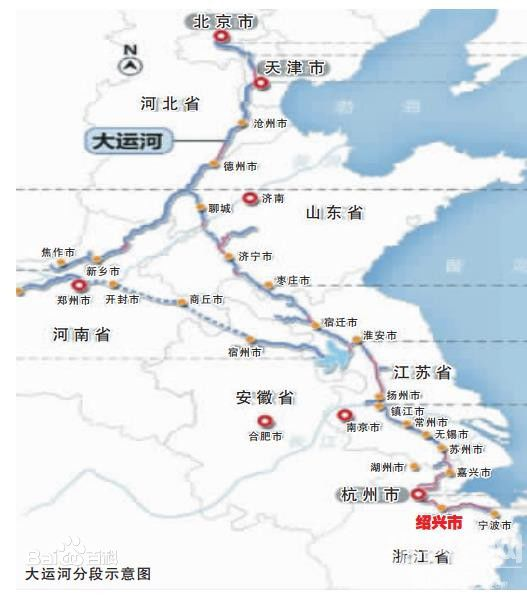
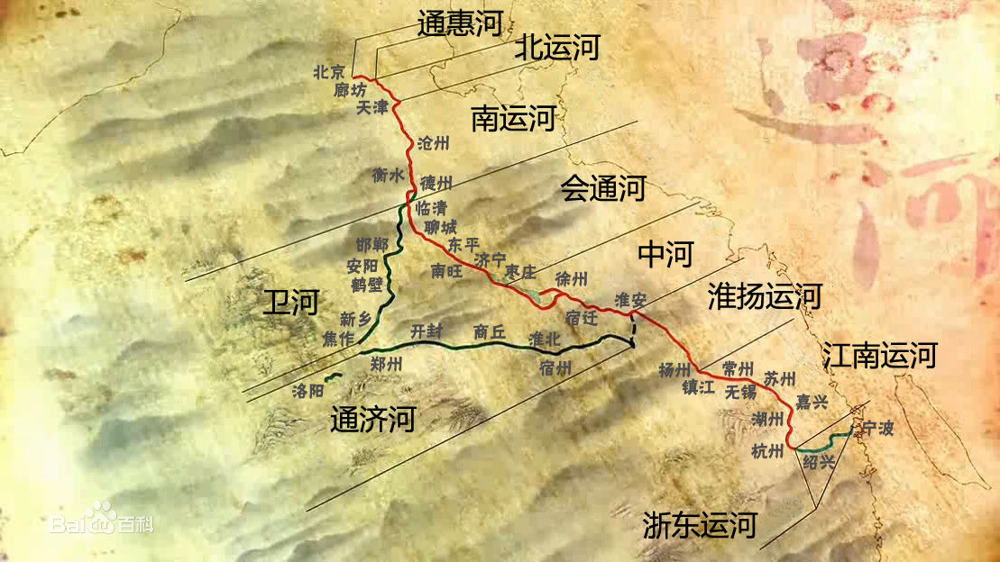
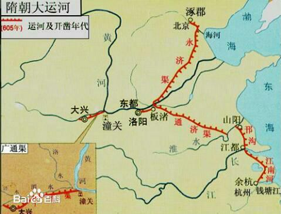
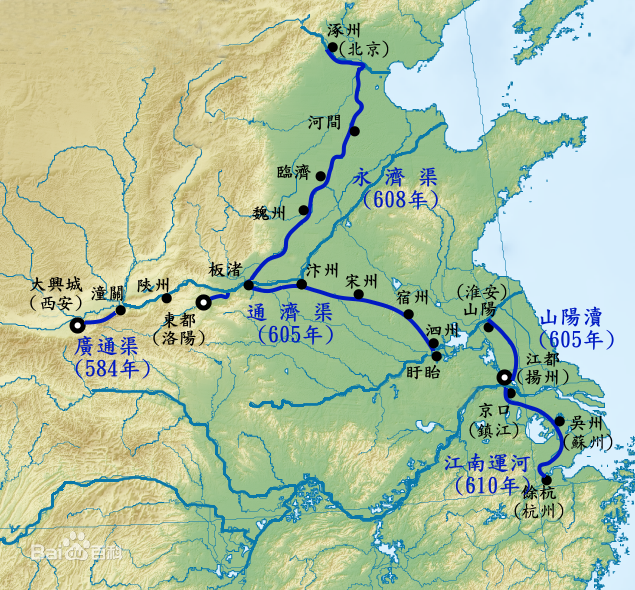
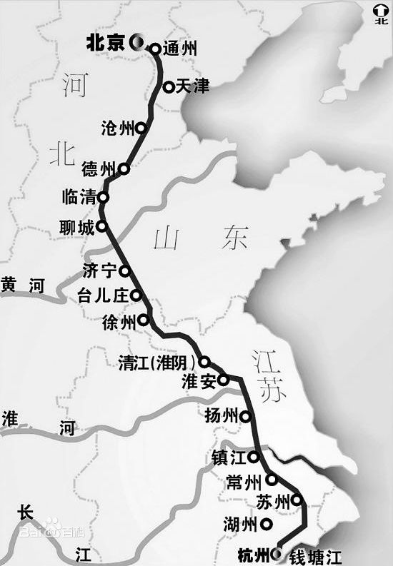
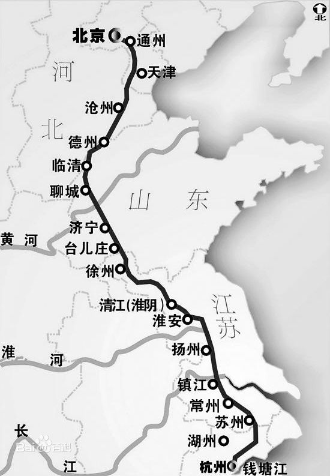
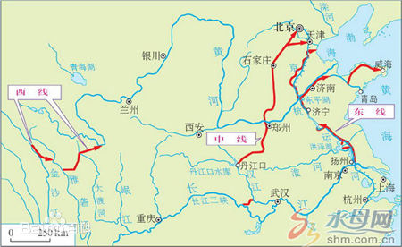
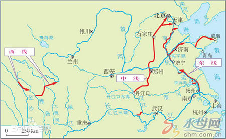

中国大运河，船往高处走，水往高处流
古代的大运河，因为运输的需要而产生，以都城为中心建造。隋朝大运河以洛阳为中心，北达涿郡（北京），南至余杭（杭州），分四段，地跨北京、天津、河北、山东、河南、安徽、江苏、浙江8省市，连接海河、黄河、淮河、钱塘江5大水系（古代水系河道会不断变化），全长两千七百余公里。
京杭大运河以元朝都城元大都为中心，是隋唐大运河的直线贯通，全长约1797公里（未过隋唐运河经过的河南、安徽）。
运河需要对水系的自然流向进行改变，利用天然的水资源和人工开凿的渠道形成水上运输动脉，贯通城镇，形成水运通道。其困难在于需要让运河的流经的区域的海拔的不一致，水不能往高处流。先人的水利智慧是设计运河分段，船只通过燕埭水闸和复式水闸由低处提高到高处。另外，对于较高海拔的运河段引入更高海拔的水源，确保运河运输水深的需要。
京杭大运河最高海拔位置在现在山东的汶上县南旺，高39米，如果通过这一制高点，是运河贯通的难点。一个叫白英的人提出，在海拔达50米的汶河段筑坝（戴村坝），接着从戴村坝开凿一条可以自流的引水渠通过下游的运河水脊南旺，从这里进入运河，左右分流，贯通运河水脊。
现代的南水北调工程分为西线、中线、东线。东线工程就是利用高杭大运河逐级提水北送。运河的主要目的已从古代水运转向为水资源的输送。南水北调工程通过现代科技手段利用水泵实现了真正的水往高处流。
京杭运河的部分河段是原来天然的河流和湖泊，部分河段是人工开挖的，它的水量大部分从沟通的天然河道中得到补给，因此各段的流向很不一致。大运河各段之间高差悬殊，全线地势“三起三落”，其中济宁北部的南旺地势最高，号称水脊。引汶河之水在此分流，向北过黄河至临清入南运河（即卫河），流向天津；向南经徐州流向清江。临清与徐州之间高差最大，且水源不足，水深较浅，航行困难，为此设置38个水闸，分段拦水，保持水量，便于通航。长江南岸的丹徒一带地势较高，是大运河的第二个分流点，向北经长江至清江，向南流至杭州。北京地势较高，北运河从北向南流至天津。
京杭大运河全程分为七段，具体流向如下，河流分界限如下图所示：
（1）通惠河，天津以北到北京段，流向是北向南；
（2）北运河；流向是南向北；
（3）南运河；流向是南向北
（4）鲁运河；流向是南向北
（5）中运河；流向是北向南
（6）里运河；流向是北向南
（7）江南运河。流向是北向南
京杭运河的流向、水源和排蓄条件在各段均不相同，非常复杂，流向总体概括为四个节点、五种流向：
节点1 天津（海河）以北的通惠河、北运河向南流；节点1与节点2 东平湖 之间的南运河、鲁北运河向北流；节点2与节点3长江（清江）之间的鲁南运河、中运河、里运河向南流；节点3与节点4长江以南的丹阳之间河段向北流；丹阳以南河段（江南运河）向南流。
①通惠运河。历史性通航河道。由于清末实行“停漕改折”政策和20世纪以来铁路、公路交通发展，货物转为陆运，加之水源不足，航道失修,至50年代初期,仅有少量船只作间歇性通航。目前该河主要用作北京市排水河道，已不能通航。
②北运河。长约180公里,集水面积5.11万平方公里，由天津注入海河。除屈家店至天津段15公里可供小船作季节性通航外，其余河道均不能通航。
③南运河。又名御河,长414公里。四女寺至临清段称卫运河,长94公里。天津至四女寺段航道窄狭弯曲,底宽15～30米,水深约 1米，建有杨柳青、独流、北陈屯、安陵4座船闸，可通航100吨级船舶。由于上游水库拦蓄，两岸农田灌溉，加之年久失修，现已处于断航状态。卫运河底宽 30米,水深约1米,建有四女寺、祝宫屯船闸,可通航100吨级船舶。由于上游岳城水库畜水，截走水源，尤当卫运河扩大治理后，航道情况骤然恶化。
④鲁北运河。也称位山、临清运河，原河段已淤塞。1958年另选新线，长104公里，但未开挖。1960～1968年,根据引黄输水要求，开挖了周店至尚店76公里渠道，两头河段尚未开挖。
⑤鲁南运河。国那里至梁山段称东平湖湖西航道,长20公里,1968年虽经疏浚整治,但河道严重淤积,水深不足，尚不能通航。梁山至南旺段长33.8公 里，枯水期航道水深0.5米,每年可通航6个月,为季节性航道。南旺至济宁段长27.1公里,底宽15米,枯水期水深0.5米,每年仅通航6个月,为季节 性航道。济宁至二级坝段长78.1公里，航道顺直，枯水期水深1米以上，底宽50米,可通航100吨级船舶。
⑥中运河。二级坝至大王庙段原来 是走韩庄、台儿庄一线。1958年在江苏省境内新辟南四湖湖西航道及不牢河河段，使河道经徐州市北郊通过，至大王庙与中运河汇合。大王庙至淮阴段仍循原来 河道南下,长163公里。徐州以下河段,经近年分段拓宽,航道一般底宽45～60米，水深3米以上,已可通航500～700吨级以上拖带船队。是为徐州煤 炭南运主要线路。
⑦里运河。全长169公里，其入江口原在瓜洲,1958年改至六圩入江。近年屡经整治，航道底宽一般达70米,水深3米以上，可通航1000吨级拖带船队。年运货量1500万吨左右。
⑧江南运河。自长江南岸谏壁口经丹阳、常州、无锡、苏州、平望至杭州。其中，平望至杭州有3条航线，即东、中、西线，如以东线计算,全长323.8公里，大部分底宽20米，水深2米,一般可通航40～100吨级船舶,年货运量达1600余万吨。
中华人民共和国成立后，对运河进行了大规模整修，使其重新发挥航运、灌溉、防洪和排涝的多种作用。1988年底建成的京杭运河和钱塘江沟通工程已将江、河、海衔接起来，构成了以杭州为中心的、以京杭运河与长江、黄河、淮河、海河、钱塘江五大水系相连通的水运网。
中国大运河
 隋朝大运河
 京杭大运河
 



 

一、位于北京的京杭大运河海拔高度约是52米，位于杭州的京杭大运河海拔高度约是18米，二者比较，海拔落差约是34米。
杭运河地处我国黄、淮、海冲积平原东部边缘地带及长江三角洲的里下河地区、太湖流域两大碟形洼地之内。
沿运地势具有三起三伏的特点，起伏之差一般在20～40m之间。
北京至天津段，距离虽短，却高差悬殊，本段系京杭运河的
第一降落段。通惠河河底平均高度约30m，（该高度指高出废黄零点高度），通县河底高约20m，天津市海河河底高度则为 3m，北京至天津段河床高差可达33余米。
天津往南地面逐渐隆起，到黄河现道止，为第一隆起段。临清河底高25m，从天津到临清，河床高度相差28m。大运河穿过黄河现道之处，是京杭运河最高地点，可视为京杭运河在黄淮之间的分水岭，穿黄处河底高38m。
从天津市至穿黄处，京杭运河河床高度相差41m。
运河过黄河到南旺以南，地面高度又逐渐降落，直到长江为止，为京杭运河第二降落段。
济宁河底高31m，淮阴河底高4m，在穿过长江处，河底高度为-15m。长江以南，运河河床又逐渐隆起，到丹阳北部为最高点，这是第二隆起段，是江南运河的分水岭。丹北分海拔高程30～40m，相对高程仅20m左右，河底高程约8m左右，至无锡崇德河底高程下降为-7m，这是第三降落段。
从崇德到杭州，河床又略见隆起，但河底高程均在-1~-5m之间，这是第三隆起段。
由于京杭运河各段地面高度不同，因此各段航道水流的方向
也不相同。综上所述，可概括如表所示。
当大运河全线通航时，从北京到通洲、临清到淮阴、镇江到常州三段，利用河闸通航，
维持比较困难，其余各段则属普通河流性质
水往高处流
屈云柱屈会莲
一
水通常是往低处流的。你看它，穿幽谷，跳悬崖，浩浩汤汤，奔腾咆哮，直奔前方。
水有时是往高处流的。这体现了人的意志，人的智慧，人的勇气和力量；它象征着攀登，象征着创造，象征着积极进取。南水北调东线工程就是这样。因为长江下游的扬州江都比山东东平湖低40米，需要通过13个梯级泵站提升，让长江之水沿着京杭大运河从低处流向高处，通过穿黄隧洞，让两大母亲河之水在此立体交叉，然后自流到胶东和京津。这将大大促进胶东和华北两地区的经济发展，将全方位的提升水利的社会功能和文化品位。
由此我们联想到明朝，也是在山东的这一段京杭大运河上，有三个伟大的水利工程名垂千古，一个个杰出的治理运河的专家，经过深入细致地调查研究，创造性地制订出科学的治水方略，呕心沥血，身体力行，多次让水往高处流，惠及明清两代400多年，在中国水利史上写下了一部又一部辉煌篇章。
二
公元1402年，朱棣夺了他侄儿朱允炆的皇帝位子之后，准备迁都北京，庞大的官僚机构每年需要的几百万石粮食和大批的丝绸、茶叶等生活用品，还有养活卫戍京城和北部边疆的200万军队的物资，再加上大规模地修建皇宫王府和修筑长城的建材，这些物资大都仰给江南。南北运输问题摆在了面前。当时的运输线路主要有三条，一条是海上航线，一条是陆路，一条是元人改线开通的京杭大运河。海上风大浪急，当时的木帆船抗风浪能力很低，海运的损失往往十分之二三。陆路太慢，且运量有限。所以，最好还是通过京杭大运河来运输。但是，明太祖洪武元年（1638年）和洪武二十四年（1391年），黄河的两次决口，已将会通河（济宁至临清之间的一段大运河）淤塞。当时迫切需要重新开通大运河，永乐九年（1411年），明成祖朱棣命令工部尚书宋礼征调民夫16.5万人，疏浚会通河。
宋礼面前摆着两条路。一条是，像许多贪腐的官吏那样，把这次接手的国家大工程，当作天赐的发财良机，偷工减料，克扣民夫，把工程做成豆腐渣，那几十万两白花花的银子就会像流水一样流进自己的腰包，然后拿出一小部分，上上下下打点贿赂一下，就会皆大欢喜。第二条是，循规蹈矩，把元代的旧运河疏浚一下，既省时省力，又能凸显政绩，做成一个毫无风险的“面子工程”，再雇几个歌功颂德的吹鼓手吹嘘一番，立上一块大大的“功德碑”，一定会得到皇帝佬儿的加官晋爵和同僚的赞誉，一举多得，何乐而不为呢?但是，老宋偏偏一根筋，不愿走这两条路。一心要实践他治国平天下的抱负，一心只想着为国家为人民谋永利，决心走出一条别人不敢走的创新之路。这需要远见，需要智慧，需要勇气，还要敢于担当。
他不辞辛劳，实地勘测，精心研究，发现元人为了“引黄济运”开挖的会通河距离黄河太近，强悍的黄河每次决溢都会将弱小的运河淤塞。如果一个弱小者与一个强势者靠得太近，就随时会有失去自我甚至被吞噬的危险。所以，弱小者不应只想着沾强势者的光，要时时怀有警惕之心、敬畏之心，最好敬而远之。还有，会通河岸狭水浅，堤岸抗洪能力太低，河床宽度仅在10米以内，水深只有0.8—1.0米，只能航行150料（约合今天4.5吨）的船只，每年的漕运不超过10万石，所以，终元一代，以海运为主，漕运为辅。于是，老宋做出了一个大胆的决定，将袁口（今汶上县袁口）以北至寿张沙湾的一段运河东徙20余里，移到鲁中丘陵西部边缘的高亢之地，让运河之水往高处流，避开黄河的侵扰，利用弃土遍筑西堤以阻挡黄水，并且将新运河拓宽挖深，以增强其通航能力。
但是，创新是有风险的，一旦失败，将招致罢官乃至杀头。1411年7月，新的会通河挖成之后，却有河无水，是一条干沟。舆论一片哗然，老宋一下子被推到了风口浪尖上。怎么办？老宋急红了眼，彻夜不眠，苦苦地思索，突然悟出，智慧存于民间。于是他放下官老爷的架子，“微服旁求延揽，行至汶上城北遇公（白英）于昙彩山之阳，遂虚心访问利漕之事”（《白氏宗譜》）。白英，这个乡野草莱之中的奇才高士，虽然没有功名，没有官位，不吃皇粮，只是运河边上十几个民夫的小小的领班，但他深知运河对国家的重要性，深知运河民夫拉纤放溜的辛苦。他十几年间走遍汶上、济宁、东平、泰安等20多个州县，认真地考察了这些地方的地形水势，精心构思了一套科学旳治运方略，胸中蕴藏着利国利民的大才大智，储玉于椟，以待善贾与良机。如今，机遇终于降临了。白英感于老宋“礼贤下士，治河心切”，遂“为之出奇计”（《白氏宗譜》）。
白英分析，元代的郭守敬设计、李奥鲁赤开挖的济州河（济宁至须城的一段运河）因缺少水源，毕辅国在宁阳县堽城筑土坝截住汶水，导其南流汇入洸河、府河，在兖州西边再与泗水汇合，流入济宁，经过玉带河（在今太白中路）至天井闸流入运河再南北分流，以解决运河水源之不足。应该肯定他们引“四水济运”和南北分水的思路是正确的。但是，元运河最大的失误是把分水点选在了地势较低的济宁。济宁地势北高而南低，故济运之水南行容易，北行困难。而如今运河又东移了20多里，到达地势最高的汶上县南旺，南旺的地平面与济宁的太白楼顶齐，这里是全运河的制高点，号称“水脊”，运河之内怎么会有水呢。
那么，怎样破解这道难题呢？白英建议，在不违背水往低处流的本性的前提下，让它向高处流。把分水点选在南旺，即不让汶水流向济宁而流向南旺。这个办法是否可行呢？汶水能流向比济宁高出90尺的“水脊”南旺吗？白英以科学的实测数据作出了回答，“度形势，视汶水坎河口高南旺分水口三十余丈，又北临临清地降九十尺，南至沽头地降一百一十六尺，必得汶水引入南旺，运河始得会通”（《白氏宗谱》）。宋礼喜出望外，欣然接受了白英老人的建议，并立即任命白英为“治河总工程师”。
这个堪与李冰父子的都江堰相媲美的高科技的水利工程在白英老人的指导下于1411年8月开工修筑了。他一边破开堽城大坝，使汶水全部自然西流，并且堵住汶河上的堽城入洸口门，使之不再流入济宁；一边在堽城以西汶上县的坎河口西边的汶河上修筑了一个“五里十三步”的土沙坝，即戴村坝，截住汶水使之不向西流，然后扒开汶河南岸大堤，将汶河的一条岔流疏通称之为小汶河，把汶河水通过80多里长的小汶河引入南旺运河。为了防范汶水激流对运河大堤的冲击，在汶运交汇的丁字口砌筑了一道300米长的石坝。为了使汶水向运河南北分流，，在石坝的中部迎汶激流处设置一个活动的鱼嘴形的“分水拨”，汶水流到石坝下，即被“分水拨”一分为二，“南流接徐沛十之四，北流达临清十之六”（《明史·宋礼传》）。也可以“三七”分，即俗称“七分朝天子，三分下江南”。为了弥补汶河枯水期水源之不足，白英又采用“导泉补源”“建立闸坝”“设立水柜”等措施。至永乐十二年（1414年），工程告竣，“漕运大通，帆桅连樯而下，舟舰鱼贯而行”，“漕粟益多，永乐十三年遂罢海运”（《明史·宋礼传》）。自此以后的60年里，每年漕运到北京的粮食都在600万石左右。
可惜的是，南旺分水工程竣工以后，白英随宋礼进京复命，因积劳成疾，行至德州桑园，不幸呕吐鲜血逝世，时年56岁，中国科技史上的这颗耀眼的治水巨星过早地陨落了。
大运河的全线贯通，巩固了国家的统一和各民族的团结，大大促进了中国南北经济文化的交流。19世纪初，美国水利专家考察团团长方维赞美南旺水利工程说：“此等工程在十四五世纪工程学的襁褓时代，必视为绝大事业……令我辈焉能不敬且崇耶。”1965年，毛泽东主席来山东时称赞：“这是一个了不起的工程”，白英是“农民水利专家”。
三
明代，大运河最大的顽疾是黄河屡屡决口淤塞运道。黄河三年两决，有时甚至一年两决，它像发怒的猛兽，时而北窜，时而南犯。决溢的黄水常常在今曹县、单县、丰县、沛县、鱼台县之间漫流，最后都汇入徐州至鱼台县之间的大运河并将其淤平，而且挖而复淤，淤而复挖。国家的运输大动脉时通时阻，人民不胜其苦，官府也被弄得焦头烂额。朝中的有识之士痛切地感到，实在不能再走年年淤塞年年疏挖的老路了，猪撞了南墙还知道回头呢。应该转变观念转变思路，寻找一条新的长久的治运之路了。
明嘉靖六年（1527年），“黄河水溢入漕渠，沛北庙道口淤数十里，粮艘为阻。”（《明史·列传第一百一十》）朝廷大臣为商议对策分成两派，一派以潘季驯为代表，主张“筑（黄河）堤浚（运）河，束水刷沙”，既治河又保运。从理论上看，这个办法很美好很诱人。潘季驯是明代的治河专家，四次总督黄运两河，驻节济宁凡27年，被誉为“千古治黄第一人”。但是，他把治黄的成功经验用在治运上则行不通，他力主的用泗河清水冲沙，收效甚微，原因是泗河流到徐沛之间已非常平缓，冲沙的力度大大地减小了。他后来主持开挖的一段大运河——李家口河的失败，也证明了这种方法是错误的。另一派的代表人物是左都御史胡世宁、兵部尚书李成勋、右都御史河道总督盛应期等人。他们主张“避开黄河，另选新道”，让大运河往高处流。因为黄河太强大了，运河哪是它的对手，实在惹不起。惹不起但躲得起，躲到哪里才安全呢？他们认为，应从地势低洼的昭阳湖西边躲到湖的东边去，因为湖东处在鲁中丘陵的西部边缘，地势高亢，且土地坚硬，不易淤塞。新运道应“于昭阳湖东，北进江家口，南出留城口，开浚百四十里，较疏旧河力省而利永”（《明史·列传第一百一十》）。运道东移至高处以后，由于不能再“引黄济运”，水源成了突出的问题。解决的办法是，除了引“四水济运”外，还可以“导泉济运”，并将南阳湖、独山湖设为“水柜”蓄水济运。最终嘉靖皇帝同意了这一派的意见，征发民工6.5万人，拨出白银20万两，任命盛应期主持此项工程，限定工期六个月。
可悲的是，嘉靖皇帝昏庸无主见，且偏听偏信，政治极为黑暗。这个在我国治运史上有着伟大创造性的工程注定命运多舛。当工程进行到四个月开挖的新运河已完成百分之八九十的时候，各种诽谤滚滚而至。当时正值天旱，朝中的黑暗势力纷纷毁谤盛应期“开河非计”，分浚支河的官员柯维熊“反覆变诈，倾大臣，误国事”，再加上盛应期督工太急，得罪了一些人，引起了这些人的怨恨和攻击。皇帝佬儿大光其火，“遽令罢役”。这真是功未成而谤先生，德愈高而毁愈多。盛应期负屈衔冤，忍气吞声，恳求皇上再给一个月的工期将新河挖成。但昏聩的皇帝佬儿根本不听，迅速将盛应期召回京城撤职罢官。这项利国利民的伟大工程从此被各种恶势力合力绞杀了。以后，“近四十年无敢言改河着”。“近四十年”间，皇帝佬儿更加昏庸无能，加之奸臣严嵩专横跋扈，官吏们为了现实利益，为了官位俸禄乃至身家性命，个个成了侏儒奴才，成了专制政权的应声虫，哪管国家利益和人民的死活。
盛应期被撤职以后的38年间，黄河像脱缰的野马，在曹、单、丰、沛、鱼台诸县之间横冲直撞，屡屡淤塞大运河。为了疏浚大运河，朝廷像走马灯似地撤换了12任河道总督，滥用了14万民工，均无济于事。暮年的嘉靖佬儿更加昏聩，干脆撒手不管只顾享他的清福，任凭大臣们去商讨治运之策了。但家贫出孝子，国难出忠臣。“我们从古以来，就有埋头苦干的人，有拼命硬干的人，有为民请命的人，有舍身求法的人……”（鲁迅《中国人失掉自信力了吗？》）此时，一位杰出的济世之才登上了治运的舞台。他叫朱衡，江西万安人，嘉靖十一年进士，时任南京刑部尚书，改任工部尚书。他走马上任治理运河，不顾个人安危，驾一叶小舟，冒着风雨，“周视河流”，“阅历运道，视汪洋澎湃数百里，淤淖深陷，茫无跬足举手地。且东阚昭阳湖，地卑洼，黄水自西奔湖，势必横截，旧河即开，势必重淤，是作无益，以靡费耳”（明·涂渊《新河神庙碑记》）。既然“旧渠已成平陆”，并且“疏与塞俱不得施”，“不独今日不可治也，即能治之，他岁（黄河）水至，且复沦没”（明·徐阶《漕运新渠记》）。那么，怎样才能让大运河永世畅流呢？他召集许多当地的官吏和父老问计，有人告诉他，取道南阳折而向南，再向东到达夏村（今微山县县城），又向东到达留城，这一带地势高亢，决溢的黄水侵入昭阳湖以后会迅速沉淀不能漫流到此处。从前中丞盛应期曾在那里开凿新渠，功败垂成，但“其迹尚存，可续也”。朱衡立即率领僚属前去察看，果然如此。他立即飞马传递奏疏，请示朝廷，得到了批准。朝廷拨出白银40万两，征发三省民夫9.1万人，工程马上就要开始了。
不料，各种恶毒的攻击铺天盖地而来。那些旧运河边的豪强和一些泼皮无赖希望运道年年淤塞，他们好年年进行疏浚，以便大发横财。如今运河要改道了，无疑是断了他们的财路。于是他们勾结贿赂朝中的权贵，一方面污蔑朱衡想挖新河是违抗君命祸害民众，一方面大力宣扬修复旧运道的好处。更狠毒的是，他们暗地里还对朱衡百般威胁。朝廷派工科给事中何起鸣前去勘察评议，所幸何起鸣这次说了良心话公道话，使工程得以实施。
朱衡驻节于夏村临时搭建的工棚里，向各位部属按段分配了明确的任务，让他们严格按照科学测定的图纸施工，限定工期八个月。他亲自督工，昼夜不懈。严厉地惩处了那些不听指挥消极怠工的人，弹劾罢免了几名玩忽职守的官员。此役始于嘉靖四十四年（1565年）十一月二十四日，成于次年九月九日。开凿南阳至留城的新渠141里，疏浚留城至境山的旧渠53里，筑土堤53里、石堤30里，建节制闸9座、减水闸16座，筑土坝13条、石坝1条，开月河6条，疏浚支河近百里。自此，运道复通。
然而天有不测风云，工毕之后适逢连降暴雨，黄河突然决溢，自沛县飞云桥直冲留城，将马家桥附近的运河大堤冲垮，留城上下新挖的运道被淤塞。这一下正合朝廷内别有用心的权贵的心意，给事中郑欣、王元春，御史黄襄等人像群犬狂吠，交替上表章弹劾朱衡，连先前支持朱衡的何起鸣也加入了这伙人的队伍，他们恶毒攻击朱衡“虐民幸功”，要求将其罢官治罪。在当时的中国，要干成一件利国利民的事儿是多么难啊，不仅要奋不顾身地向前冲，而且要时时提防身后射来的毒箭，还要对付一些泼皮无赖的搅局。朱衡一边据理力争，一边紧急修复运河。没等皇帝降罪，运河已经修通，大批运粮船由徐州航行到了济宁。一场危机终于过去了。
嘉靖皇帝死后，隆庆皇帝即位。虽然隆庆皇帝也不是什么好鸟儿，但对朱衡还算支持，使朱衡得以继续完善新河工程。他“建闸坝，导泉源，蓄湖泊，开月河，布人夫，设铺舍，种树植，立减水闸以捍泛滥，砌南阳石堤以蓄水利，潜孚默运（暗中配合和运行）之功若有神助，人之智力或不逮者”（涂渊《新河神庙记》）。到了隆庆二年（1568年），后续工程全部完工。从盛应期算起，这项工程历时42年，实际施工仅仅4年，中间经历了多少政治的风风雨雨啊。
这条新运河被人们称为“漕运新渠”或“南阳新河”“夏镇新河”，它畅通了400多年。如今，在南阳岛上和常口至微山县城一带，这条古运河仍保存完好，仍可航行小型船只，显示了这个伟大工程的持久魅力。这是祖先留给我们的宝贵遗产，应倍加珍惜。
四
明朝后期，一个与南旺分水工程、漕运新渠齐名的运河水利工程—泇河工程历经36年的艰难曲折终于开挖成功了。它自夏镇李家堂（今微山县城三孔桥）与漕运新渠接头处起，沿微山湖东侧高地，经彭口闸、郗山、韩庄湖口，折而向东，经台儿庄至邳州直河口入黄泗运道，全长130公里，其中山东境内80公里。它也是将运道从低洼之处移到高亢之处，让运河之水往高处流的成功范例。它畅通了400多年，发挥了巨大的工程效益。今天，从微山县城泰山庙往东至彭口闸、黄埠庄一带的泇河仍保存完好，有的地方仍可航行小木船。今微山县武装部大院就是明代管理泇河的泇河厅旧址。种口村边还有当年开挖泇河的弃土堆，郗山泇河岸边的木兰祠、弥勒寺也依然存在。这些遗迹都在诉说着泇河当年的繁盛。
让我们回顾一下泇河走过的坎坷历程吧。
朱衡开挖的漕运新渠，只解决了南阳至夏镇的运河畅通问题，留城以下至徐州的运河仍然时时受到黄河的威胁，而徐州以南仍然要借黄行运。当时朝廷内外的大多数官僚只顾自己升官发财，对黄河泛滥运河淤塞视而不见，听之任之。但中国历来不缺乏忧国忧民的志士仁人，他们是中国的良心和脊梁。朱衡的继任者河道总督翁大立就是一位有良知有远见有社会责任感的忧国忧民者，他受朱衡开挖漕运新渠的启发，又经过详细地勘察和周密地论证，于隆庆三年七月和隆庆四年九月，黄河两次决溢的危机时刻，两次上疏皇帝，“惟开泇河，置黄河于度外，庻为永利耳”，并列举了开挖泇河的九大好处。（《行水金鉴》卷120）但皇帝和大臣们得过且过，根本不重视翁大立的建议，虽经廷议，但最终还是被搁置起来了。
万历二年（1574年），又一位有远见有智慧的廉吏傅希挚担任总河之职，他总结了翁大立开挖泇河之议夭折的教训，决心以铁的事实来说服身居庙堂的皇帝和官僚们。他派遣“锥手、步弓、水平、画匠人等”，在开泇最困难的三个地方逐一勘踏，提出了详细可行的解决办法，甚至连工程所需的时间、用度、监督管理等问题都计划得详尽而周到。万历三年二月，他上疏朝廷，请求开泇。没想到，这一合理化的建议再次遭到冷遇。中国历来不缺千里马，缺的是伯乐。明朝真是悲哀，竟然让隆庆、万历两头猪统治了中国几十年。
虽然翁大立、傅希挚的建议被皇帝佬儿打入了冷宫，但他们的真知灼见却在朝廷内外产生了重大影响，为后人开挖泇河打下了理论基础并做好了舆论准备。
自小生长在深宫大内之中的万历皇帝，成年亲政之后，竟然30多年不理朝政，居于后宫之中“每餐必饮，每饮必醉”，哪里知道黄河泛滥、洪水滔天、运道淤塞、生民涂炭！这个高高在上的君王，其实是一具腐朽的行尸。多亏有一批栋梁之材埋头苦干不惜性命，才一次次力挽狂澜。
“万历癸巳（1593年）徐、沛、鱼、滕雨潦大作，泉湖湓溢，汪洋滔天。漕堤溃决几二百里，运艘用阻，民乃垫溺。”总河舒应龙“日夜忧惟，博图方略，乃与二三大夫相度筹画，议开韩庄支渠，导吕孟、赤山诸湖，注之泇河，东会沂沭，由周柳诸湖出邳、宿河口，以泄潴水，使不病漕。”（明·于慎行《韩庄新河记》）舒应龙首开泇河，工程异常艰巨，泇河路线选在今微山县韩庄一带，虽然避开了高山坚石之阻，但土质仍是风化的砂岩、页岩乃至砂礓，异常坚硬。为当时的生产力所限，他只开挖了一条20公里长的中心沟，只能泄洪，很难行运。但他的首开之功为人称道，他是在荆棘丛中杀出了一条血路，使后来的开泇治运专家们看到了希望。
万历二十八年（1600年），总河刘东星继续开挖泇河，除了拓宽挖深舒应龙开的中心沟以外，还向上沿微山湖东开挖了22.5公里的引河，向下挖至台儿庄附近的泇河口。可惜工程未竣，刘东星因病去世。他开挖的泇河水深只有二三尺，只能航行小船。但他鞠躬尽瘁攻坚克难的精神难能可贵。
万历三十一年（1603年），黄河再决曹、单，冲垮运道，漫灌昭阳、微山诸湖。总河李化龙在徐、淮、凤、泗之间做了大量的实地考察，对“前所开泇河遗迹，喟然兴叹”，于万历三十二年正月，写成《请开泇河酌浚故道疏》上奏朝廷，疏中有理有据地提出开泇“六善二不疑”，得到了批准。这年四月，李化龙大开泇河，自夏镇李家港（今三孔桥）起，沿微山湖东侧的高地到韩庄，再经万年、台儿庄、邳州至宿迁直河口入黄河。工程浩大，李化龙夙兴夜寐，日夜坚守，累死在工地上。剩余的扫尾工程由总河曹时聘于次年三月完成。五月，大运河又一次全线贯通。
这项利国利民的伟大工程，从首次提出到最后完成，经过30多位有识之士36年的反复辩论和斗争，又经历过多次失败和反复实践，甚至付出了两位治运专家的性命才得以成功。至此，位于湖西低洼之地的南阳至徐州的运河故道全部废弃，改在地势高亢的湖东通航，摆脱了黄河的侵扰，缩短了航程，泽被400多年。它是一座丰碑，也是一部史诗。
五
今天，我们站在韩庄微山湖湖口，看着长江之水通过南水北调泵站的加力，滚滚滔滔向高处流去；再看一看京杭大运河里一艘艘轮船经过船闸的提升，爬坡向北航行，不由的使人浮想联翩——
水往高处流，只有带上了人的品格和追求才会如此。因为水在地球引力的作用下是自然向低处流的。一个人，一个社会，只有像水往高处流那样，不断地攀登，不断地向上，才会有希望。
水往高处流，是人们逆向思维的结晶。人们习惯于循着常规思路来思索，来工作，四平八稳，无风险无坎坷。三十亩地一头牛，老婆孩子热炕头，虽不能大富大贵，但也平安温暖。自然环境一旦发生变化，社会一旦发生变革，传统的路子往往走不通。只有打破常规，突发奇想，逆向思考，才能开创出一片新天地，才能迎来柳暗花明的新景象，才能促进科技的进步，才能推动社会的前进。
水往高处流，不会一帆风顺，一定会大费周折。传统的观念往往会以各种形式加以阻挠。立志创新的人们往往要经过一次次失败，一次次奋斗，才能取得最后的成功。
水往高处流，要付出艰苦的努力。没有钢铁的意志，没有超常的勇气，没有坚韧不拔的毅力，没有万众一心的力量是不能实现的。愿我们的国家、我们的人民像水往高处流那样，永远奔腾向上。
靠的是强力水泵提升水位.
京杭运河南水北调：从长江调水到黄河南岸设13个梯级抽水泵站,总扬程65m,穿过黄河可自流到天津.
从长江下游扬州抽引长江水,利用京杭大运河及与其平行的河道逐级提水北送,并连接起调蓄作用的洪泽湖、骆马湖、南四湖、东平湖.
出东平湖后分两路输水：一路向北,在位山附近经隧洞穿过黄河；另一路向东,通过胶东地区输水干线经济南输水到烟台、威海.
黄河以南输水干线上设泵站30处；主干线上13处,分干线上17处,设计抽水能力累计共10200m3/s,装机容量101.77万kW.黄河以北各蓄水洼淀进出口设5处抽水泵站,设计抽水能力共326m3/s,装机容量1.46万kW.
南旺分水枢纽